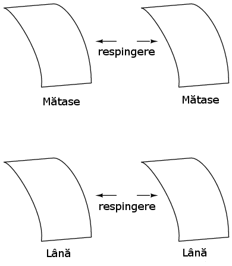
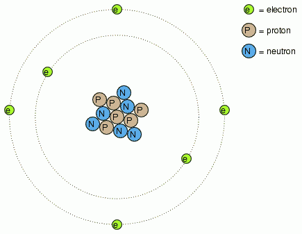

1
Table of Contents
1 1. Electricitate statică
[[ ]]]]
]]]]
Cu secole în urmă, a fost descoperit faptul că anumite tipuri de materiale se atrag misterios după au fost frecate unul de celălalt. De exemplu: după frecarea unei bucăţi de mătase de o bucată de sticlă, cele două materiale vor tinde să se lipească unul de celălalt. Într-adevăr, există o forţă de atracţie ce acţionează chiar şi atunci când cele două materiale sunt separate unul de celălalt:

Sticla şi mătasea nu sunt singurele materiale ce se comportă asfel. Oricine s-a frecat vreodată de un balon din latex s-a confruntat cu exact acelaşi fenomen atunci când a observat că balonul tinde să se lipească de el/ea. Parafina şi mătasea sunt o altă pereche de materiale recunoscute de către experimentatori ca manifestând forţe de atracţie după ce au fost frecate unul de celălat:

Acest fenomen a devenit şi mai interesant după ce a fost descoperit faptul că materiale identice, după ce au fost frecate cu un material corespunzător, se resping întotdeauna:

A fost de asemenea observat faptul că o bucată de sticlă frecată cu mătase adusă în apropierea unei bucăţi de parafină frecată cu lână, conduce la fenomenul de atracţie dintre cele două materiale:

Mai mult decât atât, s-a descoperit că orice material care posedă proprietăţi de atracţie sau respingere după frecare, poate fi clasificat într-una din cele două categorii: atras de sticlă şi respins de parafină, sau respins de sticlă şi atras de parafină. Fie prima, fie a doua posibilitate: nu s-au găsit materiale care să fie atrase sau respinse atât de sticlă cât şi de parafină, sau care să reacţioneze faţă de una fără să reacţioneze faţă de cealaltă.
O atenţie sporită a fost îndreptată spre materialele folosite pentru frecare. S-a descoperit că după frecarea a două bucăţi de sticlă cu două bucăţi de mătase, atât bucăţile de sticlă cât şi bucăţile de mătase se resping reciproc:

Acest lucru era foarte straniu. Până la urmă, niciunul dintre aceste materiale nu era vizibil modificat în urma frecării, dar cu siguranţă se comportau diferit după frecare decât înainte. Oricare ar fi fost schimbarea ce avea loc pentru a determina atracţia sau respingerea acestor materiale unul de celălalt, era una invizibilă.
Unii experimentatori au speculat existenţa „fluidelor” invizible ce se deplasează de pe un obiect pe celălalt în timpul frecării, şi că aceste „fluide” induc o forţă fizică pe o anumită distanţă. Charles Dufay a făcut parte din primii experimentatori ce au demonstrat existenţa categorică a două tipuri de schimbări ca urmare a frecării împreună dintre două tipuri de obiecte. Existenţa a mai mult de un singur tip de schimbare suferită de aceste materiale, era evidentă din faptul că rezultau două tipuri de forţe: atracţie şi respingere. Transferul ipotetic de fluid a devenit cunoscut sub numele de sarcină.
Un cercetător renumit, Benjamin Franklin, ajunge la concluzia existenţei unui singur tip de fluid ce se deplasează între obiectele frecate, şi că cele două „sarcini” diferite nu sunt decât fie un exces, fie o deficienţă din exact acelaşi fluid. Dupa ce a experimentat cu parafină şi lână, Franklin a sugerat că lâna neprelucrată transferă o parte din acest fluid invizibil de pe parafina netedă, ducând la un exces de fluid pe lână, şi un deficit de fluid pe parafină. Diferenţa rezultată de conţinut în lichid dintre cele două obiecte ar cauza prin urmare o forţă de atracţie, datorită faptului că fluidul încercă să-şi recapete echilibrul existent anterior între cele două materiale.
Postularea existenţei unui singur „fluid” ce era fie câştigat, fie pierdut în timpul frecării, se potrivea cel mai bine comportamentului observat: că toate aceste materiale se împărţeau simplu într-una din cele două categorii atunci când erau frecate, şi cel mai important, că cele două materiale active frecate unul de celălalt se încadrau întotdeauna în categorii opuse, fapt evidenţiat de atracţia inevitabilă dintre cele două materiale. În alte cuvine, nu s-a întâmplat niciodată ca două materiale frecate unul de celălalt, să devină amândouă în acelaşi timp fie pozitive, fie negative.
După speculaţiile lui Franklin legate de îndepărtarea „fluidului” de pe parafină cu ajutorul lânei, sarcina ce avea să fie asociată cu parafina frecată a devenit cunoscută sub denumirea de „negativă” (pentru presupusa deficienţă de fluid), iar tipul de sarcină asociat cu lâna frecată a devenit cunoscută ca fiind „pozitivă” (pentru presupusul exces de fluid). Această conjunctură inocentă va cauza multe bătăi de cap celor ce vor studia electricitatea în viitor!
Măsurători precise ale sarcinii electrice au fost efectuate de către fizicianul francez Charles Coulomb în anii 1780, cu ajutorul unui dispozitiv numit balanţă de torsiune, măsurând forţa generată între două obiecte încărcate din punct de vedere electric. Rezultatele muncii lui Coulomb au dus la dezvoltarea unităţii de măsură pentru sarcina electrică, şi anume coulombul. Dacă două corpuri „punctiforme” (corpuri ipotetice fără suprafaţă) sunt încărcate cu o sarcină egală de 1 coulomb şi plasate la 1 metru distanţă, ar genera o forţă de atragere (sau de respingere, în funcţie de tipul sarcinilor) de aproximativ 9 miliarde de newtoni. Definiţia operaţională a unui coulomb, ca şi unitate a sarcinii electrice (în termeni de forţă generată între cele două puncte încărcate cu sarcină electrică), s-a descoperit că este egală cu un exces sau o deficienţă de aproximativ 6.250.000.000.000.000.000 (6.25 x 1018 de electroni. Sau invers, un electron are o sarcină de aproximativ 0.00000000000000000016 coulombi (1,6 x 10-19). Prin faptul că electronul este cel mai mic purtător de sarcină electrică cunoscut, această ultimă valoare a sarcinii pentru electron a fost desemnată ca sarcina electrică elementară.
Mult mai târziu se va descoperi faptul că acest „fluid” este defapt compus din bucăţi mici de materie numite electroni, denumiţi asfel după cuvântul antic grecesc dat chihlimbarului: un alt material ce manifestă proprietăţi electrice când este frecat de lână. Experimentele realizate de atunci au relevat faptul că toate obiectele (corpurile) sunt compuse din „blocuri” extrem de mici, denumite atomi, iar aceşti atomi la rândul lor sunt compuşi din componente şi mai mici, denumite particule. Cele trei particule fundamentale regăsite în compoziţia majorităţii atomile poartă denumirea de protoni, neutroni şi electroni. Deşi majoritatea atomilor sunt o compoziţie de protoni, neutroni şi electroni, nu toţi atomii au neutroni; un exemplu este isotopul de protiu (1H1) al hidrogenului, ce reprezintă forma cea mai uşoară şi mai răspândită a hidrogenului, cu doar un singur proton şi un singur electron. Atomii sunt mult prea mici pentru a fi văzuţi, dar dacă am putea privi unul, ar arăta cam aşa:

Chiar dacă fiecare atom dintr-un material tinde să rămână o unitate, în realitate există mult spatiu liber între electroni şi „ciorchinele” de protoni şi neutroni din mijloc
Acest model brut este cel al carbonului, cu 6 protoni, 6 neutroni şi 6 electroni. În oricare atom, protonii şi neutronii sunt foarte strâns legaţi între ei, ceea ce reprezintă o calitatea importantă. Masa strâns legată de protoni şi neutroni din centrul unui atom poartă denumirea de nucleu, iar numărul de protoni din nucleul unui atom, determină identitatea elementului: dacă schimbăm numărul protonilor din nucleul unui atom, schimbăm implicit şi tipul atomului. De fapt, dacă am putea îndepărta trei protoni din nucleul unui atom de plumb, am realiza visul etern al alchimiei, transformarea plumbului în aur. Legătura strânsă a protonilor de nucleu este responsabilă de stabilitatea elementelor chimice, şi de neputinţa alchimiştilor de a-şi îndeplini visul.
Neutronii au o influenţă mult mai mică asupra caracterului chimic şi a identităţii atomului faţă de protoni, cu toate că sunt la fel de greu de scos sau adăugat din nucleu, datorită legăturii lor puternice. În cazul adaugării sau câştigării unui neutron, atomul îşi menţine aceeiaşi identitate chimică, dar va avea loc o modificară uşoară a masei sale, şi ar putea dobândi proprietăţi nucleare ciudate precum radioactivitatea.
Totuşi, electronii posedă o libertate de mişcare în cadrul atomului semnificativ mai mare decât cea a protonilor şi neutronilor. Aceştia pot fi mutaţi de pe poziţiile lor (sau pot chiar părăsi atomul cu totul!) de o energie mult mai mică decât cea necesară îndepărtării particulelor din nucleu. Dacă se întâmplă acest lucru, atomul îşi păstrează proprietăţile sale chimice, dar apare un dezechilibru important. Electronii şi protonii sunt unici prin faptul că sunt atraşi unii de ceilalţi la distanţă. Este acea atracţie la distanţă responsabilă de atracţia în urma frecării corpurilor, unde electronii sunt îndepărtaţi de atomii lor originali şi ajung pe atomii unui alt corp.
Electronii tind să respingă alţi electroni la distanţă, precum este şi cazul protonilor cu alţi protoni. Singurul motiv pentru care protonii se atrag în nucleul atomului se datorează unei forţe mult mai puternice, numită forţa nucleară tare ce îşi face simţit efectul doar pe distanţe foarte scurte. Datorită acestui efect de atracţie/respingere între particulele individuale, spuem că electronii şi protonii au sarcini electrice opuse. Adică, fiecare electron are o sarcină negativă, şi fiecare proton are o sarcină pozitivă. În număr egal în cadrul unui atom, îşi neutralizează unul altuia prezenţa, asfel încât sarcina electrică netă a atomului este zero. De aceea imaginea atomului de carbon are şase electroni: pentru a balanse sarcina electrică a celor şase protoni din nucleu. Dacă pleacă electroni, sau vin electroni în plus, sarcina netă a atomului va suferi un dezechilibru, lăsând atomul „încârcat” în ansablu, şi ducând la interacţiunea acestuia cu particule sau alţi atomi încărcaţi din apropiere. Neutronii nu sunt nici atraşi dar nici respinşi de către electroni, protoni, sau alţi neutroni, prin urmare se spune că ei nu au sarcină electrică.
Procesul de adăugare sau de plecare a electronilor este exact ceea ce se întâmplă atunci când anumite combinaţii de materiale sunt frecate unele de celelalte: electronii din atomii unu material sunt forţaţi prin frecare să-şi părăsească atomii, şi să ajungă pe atomii unui alt material. Cu alte cuvinte, electronii reprezintă „fluidul” lui Benjamin Franklin despre care vorbeam mai sus.
Rezultatul dezechilibrului acestui „fluid” (electroni) dintre obiecte poartă numele de electricitate statică. Se numeşte „statică”, pentru că electronii mutaţi de pe un material pe altul tind să rămână staţionari. În cazul parafinei şi a lânei, s-a determinat printr-o serie de experimente, că electronii din lână sunt transferaţi pe atomii din parafină, ceea ce este exact opusul ipotezei lui Franklin! În onoarea lui Franklin, ce a desemnat sarcina parafinei ca fiind „negativă”, şi pe cea a lânei ca fiind „pozitivă”, spunem că electronii posedă o sarcină „negativă”. Asfel, un obiect a cărui atomi au primit un surplus de electron, se spune că este încărcat „negativ”, pe când un obiect a căruit atomi au pierdut electroni se spune că este încărcat „pozitiv”, cu toate că aceste denumiri sunt uşor de încurcat. În momentul în care a fost descoperită adevărata natură a „fluidului” electric, nomenclatura moştenită de la Franklin legată de sarcina electrică era prea adânc înrădăcinată ca să mai poată fi schimbată cu uşurinţă, prin urmare, a rămas la fel până în zilele noastre.
Michael Faraday a demonstrat (1832) că electricitatea statică este asemenea celei produse de o baterie sau un generator. Electricitatea statică este în mare parte o bătaie de cap. La praful de puşcă se adaugă grafit pentru prevenirea aprinderii accidentale datorită electricităţii statice. Cauzează pagube circuitelor semiconductoare. Deşi este posibilă construirea motoarelor alimentate la tensiune înaltă şi curent scăzut carcteristic electricităţii statice, nu este economic. Cele câteva aplicaţii practice ale acestui tip de electricitate sunt xerografia, filtrul de aer electrostatic, şi generatorul Van de Graaf de tensiune înaltă.
Sumar:
- Toate materialele sunt făcute din „blocuri” numite atomi
- Toţi atomii în mediul lor natural conţin particule numite electroni, protoni şi neutroni, cu excepţia isotopului de protiu (1H1) al hidrogenului
- Electronii au o sarcină electrică negativă (-)
- Protonii au o sarcină electrică pozitivă (+)
- Neutronii nu posedă nicio sarcină electrică
- Electronii pot fi îndepărtaţi de atomi mult mai uşor decât protonii şi neutronii
- Numărul protoniilor din nucleu determină identitatea atomului ca şi element unic